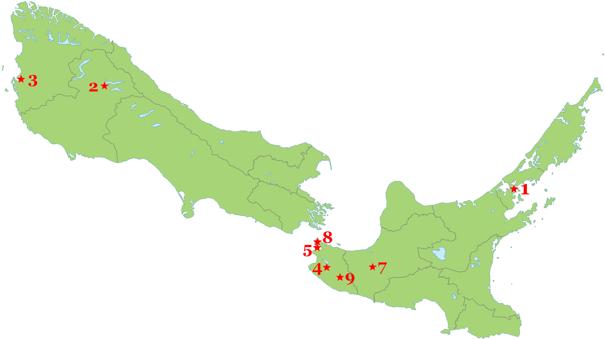

SYMONS
FAMILY COMPASSION-JUSTICE FOUNDATION
Our Mission Statement
The
overall aim of the Foundation is to engage in ministries of compassion
and justice as exemplified by the life and work of Arthur and Louise
Symons and their descendants. Work in compassion and justice will be
defined for the purposes of this Foundation as those projects and
enterprises that exemplify the Way of Jesus of Nazareth who embodied
compassion and justice as core values.
Our Goals
- Belief in God (or a higher
power) of compassion and justice
- Confronting systemic divisions
of people by race or ethnicity
- Encourage interfaith cooperation
- Addressing violence against and
seeking equal rights and opportunities for marginalized people
- Stewardship of God's whole
creation, mitigating effects of climate change
- Encouraging personal
transformation through spiritual discipline and mindfulness
- Supporting and promoting
economic justice for all
- Supporting people of all ages
and ability to contribute to society
Grants
- It is expected that grants
will be given for seeding/funding creative initiatives within not
for profit organizations, not for maintaining institutions.
- This may include new projects
of an established group looking to increase creatively its level
of justice and/or compassion in its programs.
- In most situations, grant
funds will not be used for buildings or staffing.
- Grants of up to $10,000 can be
applied for, but the size of the grants will usually be in the
range of $5000-6000.
- Grants can be renewed no more
than once for the same project.
- A project evaluation will be
requested within six months of the project being completed.
Applications
After carefully reading this information sheet, if you believe that
your organization meets the criteria for a Foundation grant, please
request an application. Applications can be made on the form
provided and sent to SymonsFoundation@gmail.com.
Who We Are
The
Symons Family Compassion-Justice Foundation was established at the
instigation of the Rev. Dr. James Symons. A retired minister of the
Presbyterian Church of the USA, Jim served as a transition minister in
New Zealand between 2001 and 2012. In 2021, out of a passion for
justice and compassion and in gratitude for friendship offered, he
funded trust in New Zealand to help churches and communities move in
the missional practice of justice and compassion. Witnessing the
positive impact of the New Zealand trust, Jim funded this second
family foundation to honor his parents.
|
|

|
- Somervell
Presbyterian Church (Remuera, Auckland) 2001
- Upper Clutha
Presbyterian Parish (Wanaka) 2001-2002
- Richmond Grove
Presbyterian Church (Invercargill) 2004
- First Church,
Presbyterian (Martinborough) 2005
- St. Christopher's
Presbyterian Parish (Seatoun) 2006
- St. David's
Presbyterian Church (Palmerston North) 2007, 2008, 2011
- St. Ninian's Uniting
Church (Karori, Wellington), 2009
- St. Luke's
Presbyterian Church and Lansdowne Presbyterian Church
(Masterton) 2012
|